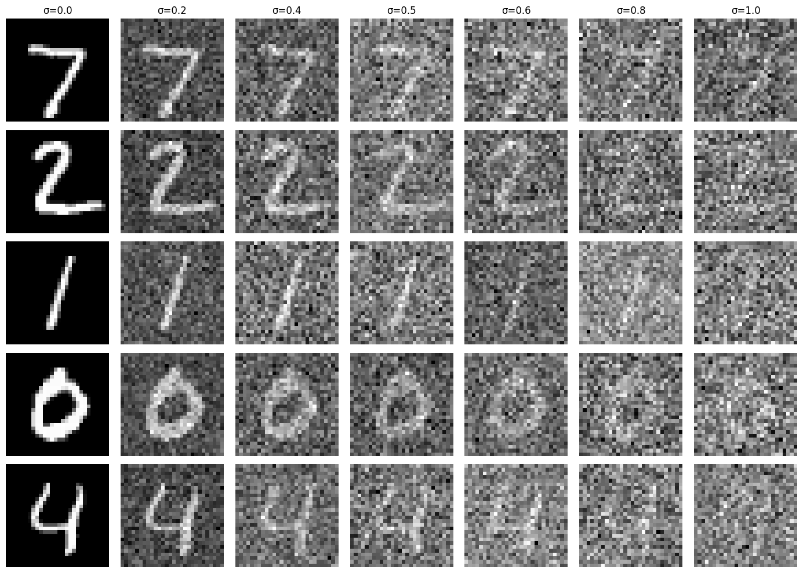
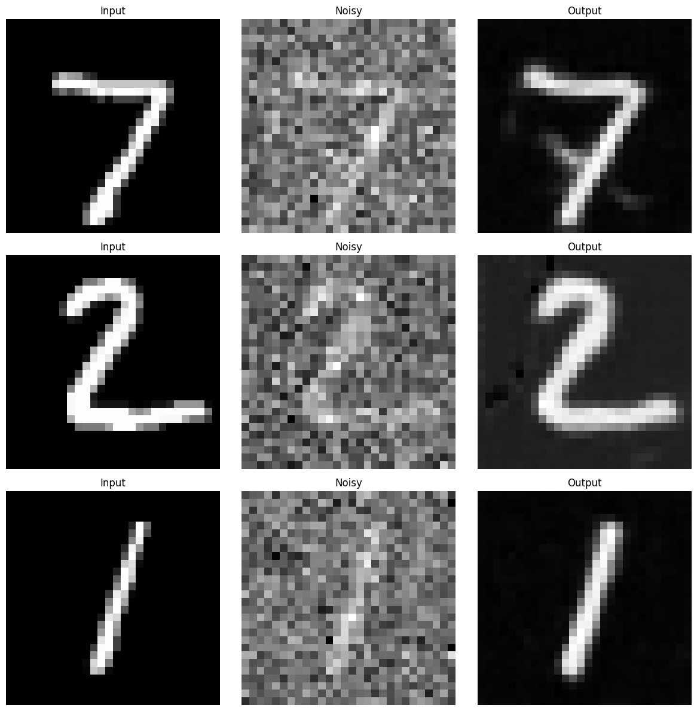
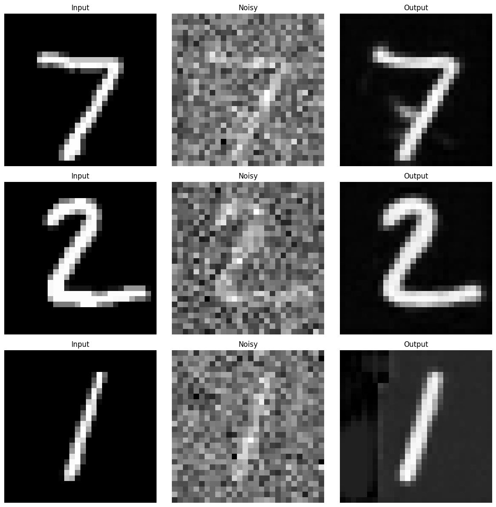
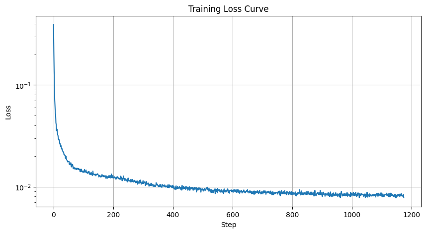
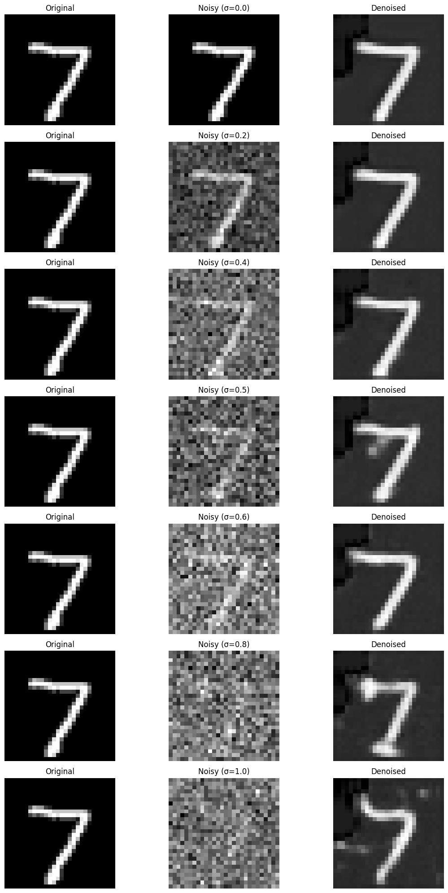
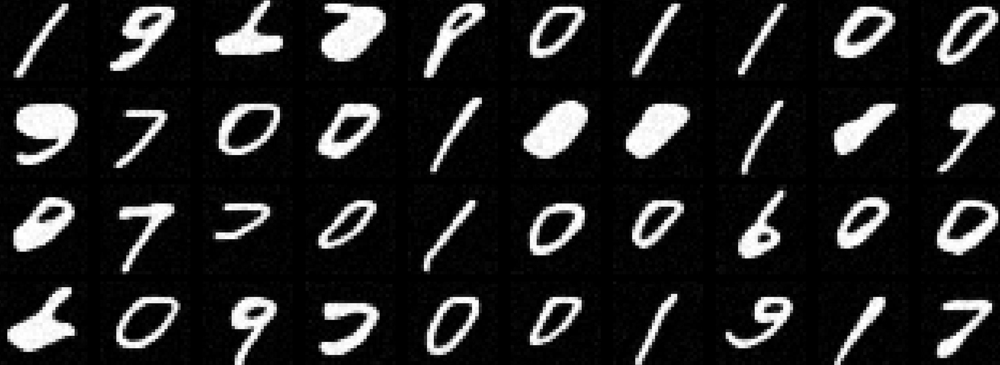
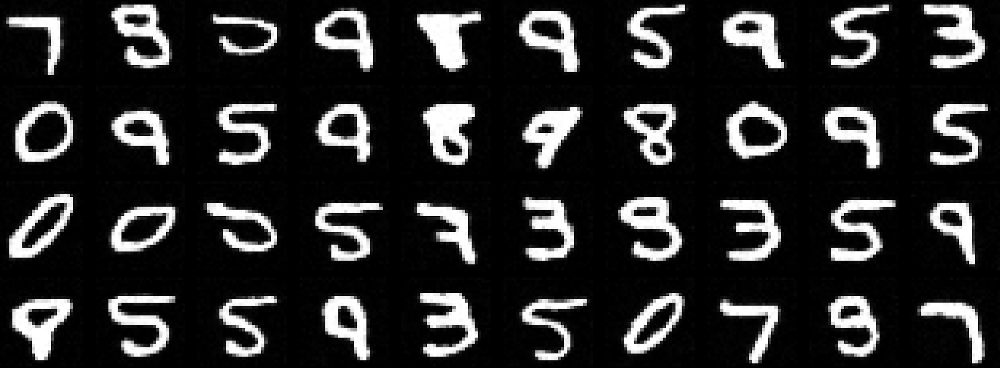
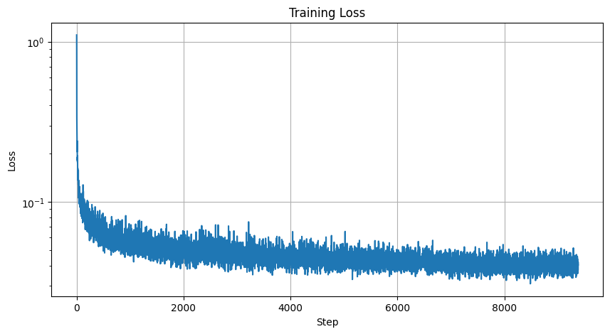
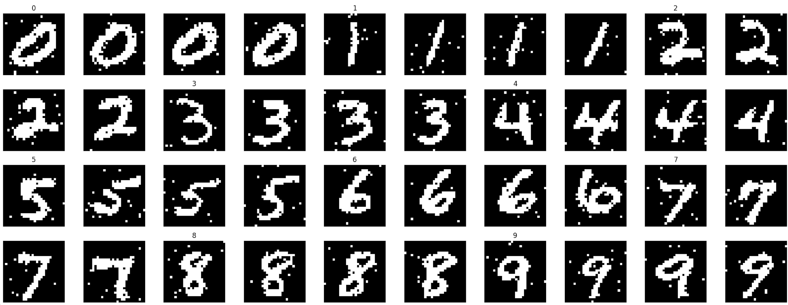

Abstract
This work moves from using a pretrained diffusion model to training a small denoising model directly. The first model learns to remove Gaussian noise from MNIST digits. The second predicts noise at arbitrary diffusion timesteps, which enables iterative sampling from pure noise. The final extension adds digit-label conditioning so the generator can target a requested number.
Direct Denoising Model
The direct denoising setup corrupts clean MNIST digits with Gaussian noise and trains a U-Net to reconstruct the clean image. The objective is mean squared error between the network output and the target clean digit:
Using σ=0.5, the model improves visibly from one epoch to five epochs. The loss curve tracks the model's ability to map noisy inputs back to digit structure.





Noise Prediction and Timestep Conditioning
Directly predicting clean images is useful, but diffusion sampling is built around predicting the noise added at each timestep. I therefore modified the U-Net to receive timestep information and predict ε rather than x0.
During training, each batch samples random timesteps from the diffusion schedule. This forces the model to learn how much noise should be removed at many stages of the process. During sampling, the model starts from pure noise and repeatedly applies the reverse update.



Digit-Label Conditioning
Label conditioning adds the desired digit as an additional input. Conceptually, the network no longer estimates p(xt−1| xt) alone; it estimates a conditional denoising process p(xt−1| xt,t,y), where y is the digit label.
This is analogous to prompt conditioning in text-to-image diffusion, but the condition is a discrete digit label instead of text. It makes the generator controllable: rather than sampling an arbitrary digit, the model can be guided toward a specific number.

Additional Implementation Notes
The direct denoising model is a supervised image-to-image regression problem. Its input is a corrupted digit, and its target is the original clean digit. This is a helpful first step because it verifies that the U-Net architecture can preserve digit identity while removing noise. However, a model trained at one fixed noise level has limited understanding of the full denoising trajectory needed for diffusion sampling.
The timestep-conditioned model changes the learning problem. Instead of always receiving the same noise distribution, the model receives images from many points in the diffusion schedule. The timestep input tells the network how noisy the current image should be, so the same weights can learn different denoising behavior for early, middle, and late sampling stages. Without this conditioning, a single noisy image tensor would not tell the model how aggressively to denoise.
Predicting noise rather than the clean image also makes the objective match the sampling algorithm. During generation, the model starts from pure noise, estimates the noise component at each step, and uses the estimate to move toward a cleaner image. Training directly on ε gives the model a target that is consistent across timesteps and avoids asking it to produce a fully clean digit in one jump from every possible noise level.
Label conditioning adds controllability by giving the network a discrete semantic signal. The label embedding can be combined with timestep information and injected into the U-Net so that the denoising process is specialized for a requested digit. This is the small-scale analogue of text conditioning in larger diffusion models: the condition guides the image distribution without replacing the denoising objective.
The loss curves and sample grids should be read together. A lower MSE indicates better noise prediction or reconstruction on average, but visual samples reveal whether the model produces recognizable digits and whether it collapses toward repeated shapes. The twenty-epoch samples are more coherent than the five-epoch samples, suggesting that the model benefits from longer training even on a relatively simple grayscale dataset.
Because MNIST is low resolution, these experiments isolate the mechanics of diffusion without the complexity of natural images. That simplicity is useful pedagogically: timestep schedules, noise prediction, and conditioning can be debugged quickly. The same concepts scale to richer datasets, but larger images would require more capacity, more training time, and stronger evaluation beyond visual inspection.
Technical Takeaways and Future Work
The key conceptual shift was from direct denoising to noise prediction. Timestep conditioning gives the model the context needed to handle different noise magnitudes, and label conditioning adds semantic control.
Future work would evaluate sample diversity, compare noise schedules, tune embedding dimensions, and test whether residual blocks or attention improve digit sharpness.